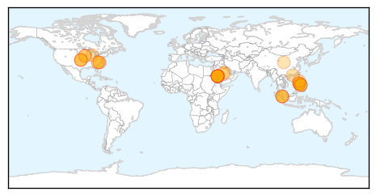

30 Day Trends
Web: 8 alerts, 0 warnings
Twitter: 1 alerts, 0 warnings
Top Articles:
- 1.000
- Spate of Mideast virus infections raises concerns
- 1.000
- DOH: Returning OFW no longer positive for MERS-CoV
- 0.999
- MERS-camel link confirmedHealthcare
- 0.999
- Spate of Mideast infections raises concerns
- 0.999
- Experts warn Mers virus may be mutating after sudden spurt in Saudi, UAE
- 0.999
- MERS Virus Bringing Back Memories, Fears Of SARS
- 0.999
- SARS revisited? Sharp jump in cases, hospital outbreaks raise MERS concerns
- 0.999
- WHO warns vs spread of MERS-Cov, urges vigilance in taking precautions
- 0.997
- WHO to meet with Saudi over MERS
- 0.997
- DH closely monitors five additional overseas MERS cases reported to WHO
- 0.996
- MERS outbreaks grow; Malaysian case had camel link
- 0.995
- WHO to meet with Saudi over MERS « The Majalla Magazine
- 0.995
- DoH denies Filipino nurse no longer positive for MERS virus
- 0.993
- The Voice of Russia: News, Breaking news, Politics, Economics, Business, Russia, International current events, Expert opinion, podcasts, Video
- 0.992
- USDA Requires Reporting of Swine Virus
- 0.992
- Saudis report 12 more MERS cases; Greece has its first
- 0.986
- DOH: No test results yet on MERS-CoV patients
- 0.971
- OFW from UAE no longer positive for MERS-CoV
- 0.970
- Greece reports first MERS coronavirus case
- 0.968
- SMS campaign fights MERSHealthcare
- 0.952
- Malaysia quarantines 15 people over respiratory disease
- 0.940
- US orders farms to report pig virus infections
- 0.919
- USDA Requires Monitoring Of Deadly Pig Virus
- 0.918
- MERS kills Riyadh woman; teachers monitoring pupils
- 0.907
- USDA orders farms to report pig virus
- 0.879
- The Daily Reflector
- 0.869
- UPDATE 1-USDA will require reporting of killer piglet virus PEDv
- 0.869
- USDA will require reporting of killer piglet virus PEDv
- 0.868
- USDA will require reporting of killer piglet virus PEDv
- 0.859
- USDA will require reporting of deadly pig virus PEDv
- 0.763
- USDA requiring reporting of deadly pig virus
- 0.748
- USDA makes PED a reportable disease
- 0.594
- Agriculture Secretary Tom Vilsack announces additional USDA actions to combat spread of diseases among U.S. pork producers
Top Tweets:
- 0.822
- RT: Saudi Arabia Ministry of Health reported six new MERS-CoV cases in Jeddah (April 18 2014, edited) http://t.co/l45SqYvwAH
- 0.753
- Nice MERS figures. RT: Our latest updates on MERS-CoV, seasonal flu and more in the weekly threat report: http://t.co/KBDDaslUlt
- 0.718
- Our latest updates on MERS-CoV, seasonal flu and more in the weekly threat report: http://t.co/12ixNoWbOE
Web/News Articles

Tweets

Article Locations
Article Confidences